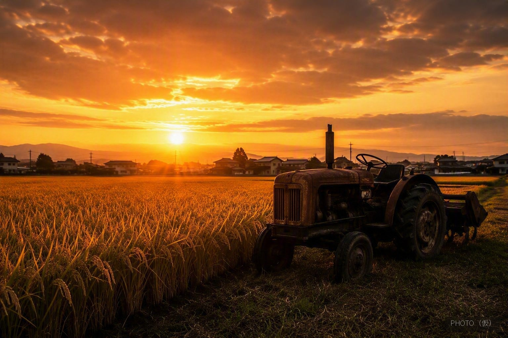

受け継ぎ、
磨き続ける。


先人の知恵と最新の技術、最善を毎年更新する米作り。
養分と水分の保持力が高い粘土質の土壌が、稲にじっくりと旨みを蓄えさせます。
倒れやすく肥料管理もシビアな山田錦を育ててきた熟練の技が、食用米の味を支えます。
最新のスマート農業やデータによる品質管理で、環境変化にも適応し、最善をアップデートしています。

山田錦の栽培は、食用米よりもずっとシビアです。背が高く風雨で倒れやすいため刈り取り時期の見極めも難しく、肥料が多すぎれば雑味の原因にもなる――そんな繊細なさじ加減を、特A地区の農家は長年かけて体得してきました。そのシビアなコントロールに熟練した酒米農家が、肥沃な特A地区の土地で育てる食用米は、他の地域のお米よりもかなりおいしいと評判をいただいています。


とうじょう米は、産地直送のオンラインストアにて販売しております。精米したてのお米を、産地から直接お届けします。
STORESストアを見る